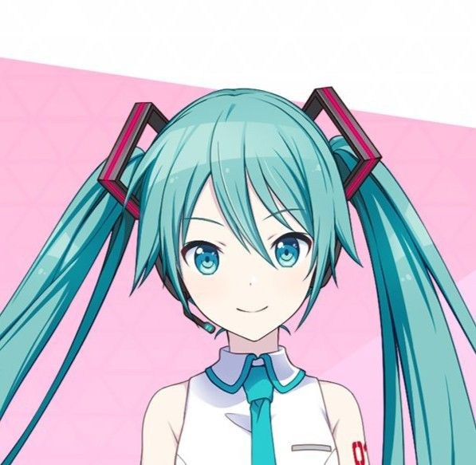

Hatsune Miku
Hatsune Miku (初音ミク) adalah karakter VOCALOID paling ikonik yang dikembangkan oleh Crypton Future Media dan dirilis pada 31 Agustus 2007. Ia merupakan VOCALOID generasi kedua yang menggunakan teknologi VOCALOID2, dan suaranya diisi oleh pengisi suara Jepang, Saki Fujita. Nama “Hatsune Miku” memiliki arti "suara pertama dari masa depan", yang mencerminkan visinya sebagai pionir dalam dunia musik digital yang bisa diciptakan siapa saja.
Karakter Miku digambarkan sebagai gadis remaja enerjik dengan rambut panjang berwarna biru kehijauan (aqua) yang dikuncir kembar (twin tails), serta mengenakan seragam futuristik yang terinspirasi dari dunia teknologi. Suara Miku yang ceria dan khas menjadikannya cocok untuk berbagai genre musik, terutama pop, electronic, dan dance. Ia menjadi simbol budaya pop digital global dan tampil dalam berbagai konser virtual menggunakan teknologi hologram. Miku telah membintangi ribuan lagu buatan komunitas, dengan lagu-lagu hits seperti “World is Mine”, “Tell Your World”, “Senbonzakura”, dan “Melt”. Tak hanya menjadi suara sintetis, Miku juga menjadi ikon kreatif yang melampaui dunia musik, hadir dalam game, anime, merchandise, hingga kolaborasi dengan merek-merek besar di seluruh dunia.
